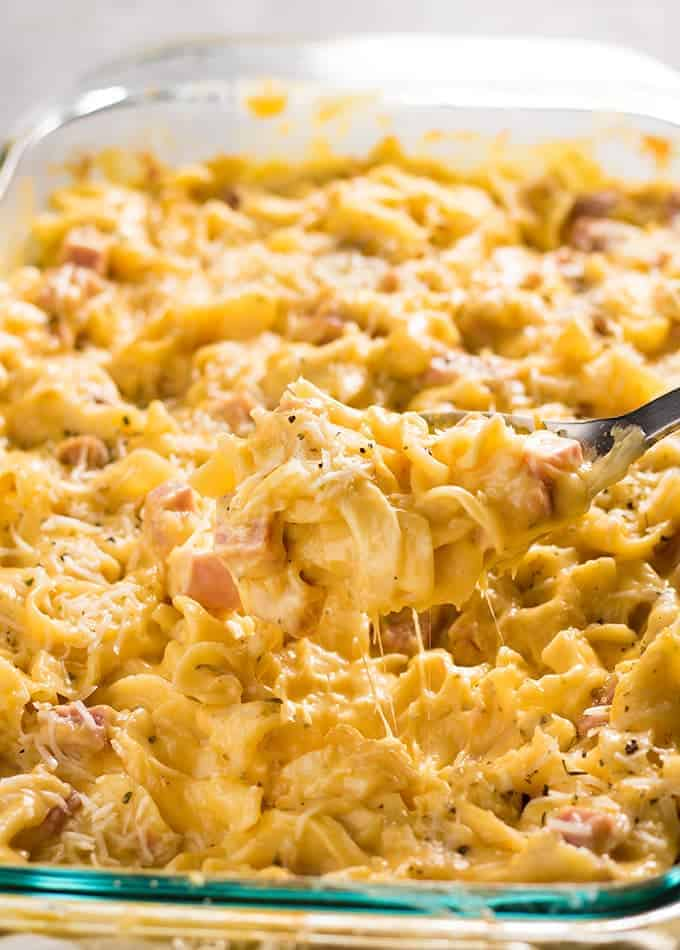

Ham and noodles Recipe

Great for leftover ham. This is easy to make with ingredients you probably already have in the kitchen. Try adding peas or other vegetables, if desired.
Ingredients
- 2 cups cooked egg noodles
- 1 cup cubed, cooked ham
- ½ cup cubed Cheddar cheese
- 1 (10.75 ounce) can condensed cream of mushroom soup
- ½ (10.75 ounce) can milk
Steps
- Preheat oven to 375 degrees F (190 degrees C).
- Place the noodles, ham, cheese, soup and milk in a 9x9 inch casserole dish and mix well.
- Bake at 375 degrees F (190 degrees C) for 25 to 30 minutes.
Recipe from allrecipes.
Home